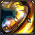

Aldébaran du Taureau
Aldébaran du Taureau est un des 88 Chevaliers d'Athéna connus comme les Chevaliers qui protègent leur Déesse à travers les différentes générations. Aldébaran est également l'un des 12 Chevaliers d'Or qui est protégé par la constellation du Taureau, et porte donc cette Armure.
Personnalité
Comme tous les Chevaliers d'Or, sa fidélité envers Athéna est sans faille. Il a rempli son devoir de chevalier au péril de sa vie. Il est un homme de parole (lorsqu'il laissa partir Seiya après que ce dernier lui ai coupé une des deux cornes de son casque). Il semble très proche de Mû. Contrairement à d'autres Chevaliers d'Or, il ne fût pas un de ceux les plus dur contre Seiya et ses amis Chevaliers. D'après Yoshino Hino dans Saint Seiya - Épisode G - Assassin, Aldébaran est très gentil et il faut se faire de lui un allié. Il est aussi émotif comme le souligne Yoshino en racontant que son père avait pleuré lorsqu'elle était partie pour les dortoirs de l'école. Il est grand, le teint mâte avec les deux sourcils collés de couleur noirs. Ses cheveux sont blonds dans le manga. Dans Saint Seiya - Épisode G - Assassin, Aldébaran a la peau tannée, ses cheveux sont longs et blonds, ses yeux sont bleus et il est doté d'un bouc blond aussi. Sur son nez Aldébaran a une cicatrice et il a aussi une cicatrice sur le côté droit de ses lèvres. Aldébaran porte une tenue de prêtre japonais composée d'une haut blanc et d'une robe bleue.
Pouvoir principal
Cornes du taureau
